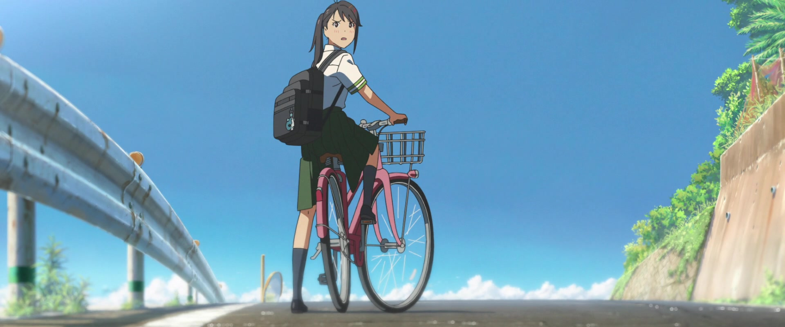
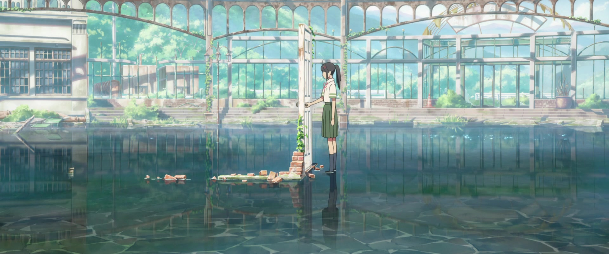
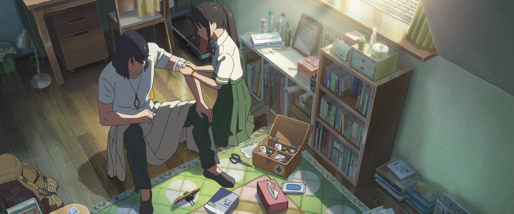

Suzume
Original title: Suzume no Tojimari
2022 . PG . 2h 2 min
IMDB : 8.4/10
Suzume, a 17-year-old girl who lives in a quiet town in Kyushu, meets a young man on a journey "looking for doors." Suzume follows him to a dilapidated building in the mountains and finds a free-standing, undisturbed door as if "it" alone were saved from devastation. Suzume feels drawn by an invisible power and reaches out to the door. Soon, doors all over Japan start opening one after another. The doors that opened must be closed to shut out calamity that lies on the other side. The places she wanders into have a sky where all hours of the day seem to blend together. Beckoned by the mysterious doors, Suzume's "journey of closing doors" begins.
Screenshots


